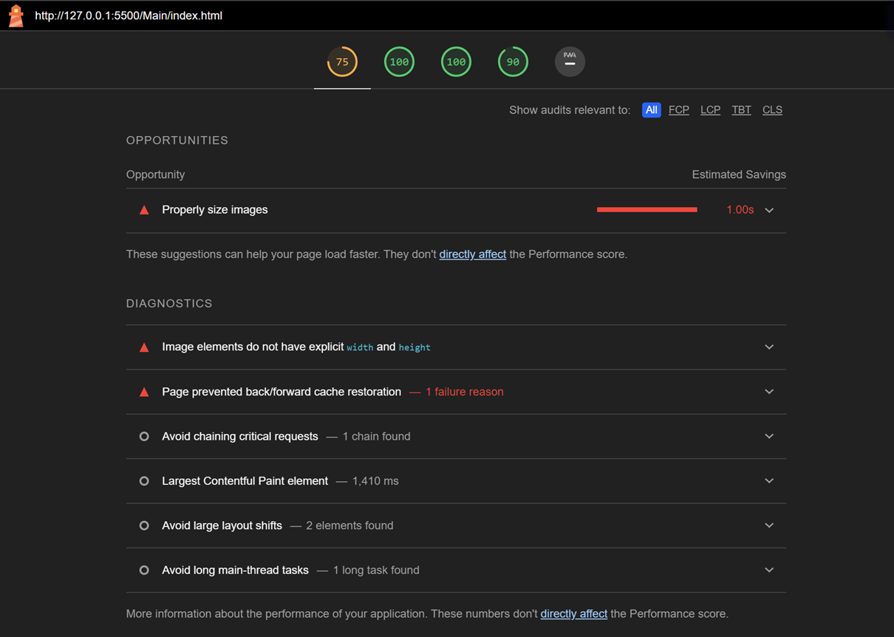
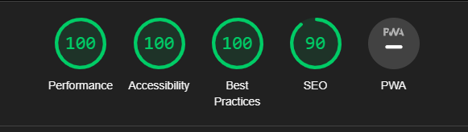
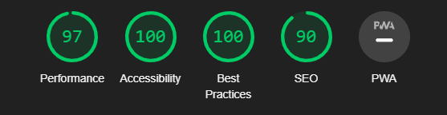
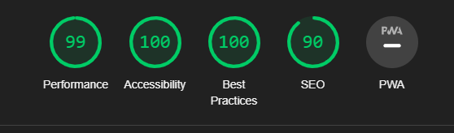
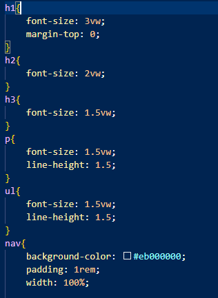

Accessibility
Pages & pictures
We started testing our website using lighthouse in chrome. The first test was the home page which had some minor problems which resulted in us getting a score of 75 in performance and 100 in the others. As you can see from the picture below.
We fixed majority of these issues by setting a specific width and hight on the pictures keeping the aspect ratio intact. This was also an issue with pictures on the website. We also worked on compressing the images as much as possible, with every picture being in the webp format. The tests afterwards reflect our changes giving us scores in high 90s to 100.
Homepage
School Aspect
Topical
Code
For the code, we focused on using relative sizes that would adapt to the view port of the screen, creating a more accessible webpage. We decided to use a responsive web design, where the element sizes are stated in units that are relative, and increasing user experience. We found this to be better than pixels or other fixed units as there can be problems with some devices or monitor sizes. Since the website uses relative untis this will not be a problem, as it will automatically change the elements to fit the users screen size og device. In our code, you will se several instances of viewport units in the picture below. This will scale the text to fit the device the user is browsing on. If the user changes the size of the browser, the text will scale with it.
Rem units is also used in our website. These units are relative to font-size of the root element. (w3schools, 2023)